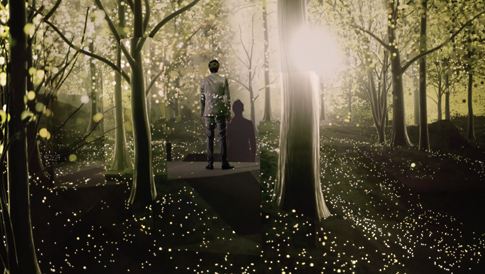

Siemens Markenfilm
Dynamic 3D mapping on stage for film, with realtime generated visuals.
In December 2014, at Artificial Rome, we teamed up with Heimat Hamburg and giraffentoast to bring the interactive brand identity film for Siemens Home Appliances to life. A spatial installation with a theatrical stage, using the latest anamorphic 3D-mapping technology and a camera-tracking system, could transform into believable, ever-changing worlds — visible only to one spectator: the camera.

It was important that this technology serve the user rather than have them follow it, keeping the concept aligned with Siemens Home Appliances' core philosophy: that a good product should make life easier and free up time for what matters. The result is an experimental brand identity film showcasing technological excellence, staying true to the idea that the medium is the message.